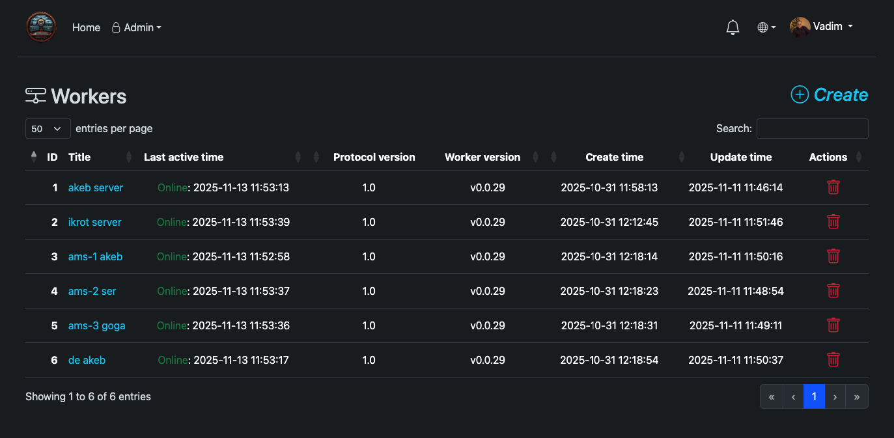
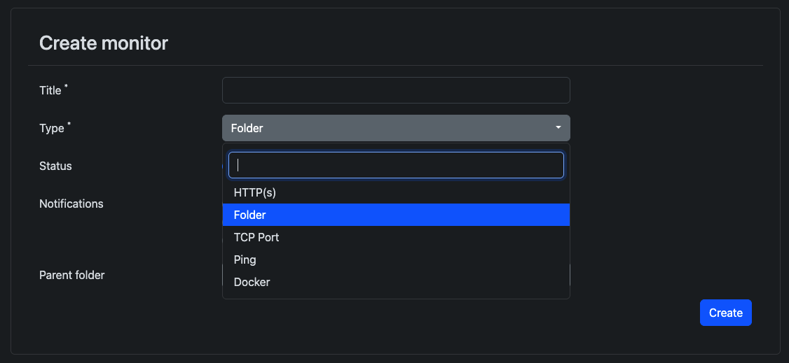

Quick start
From a running server to the first green check in a few minutes.
- Open the UI and sign in as admin.
- Create a worker under Workers → Create. Copy
WORKER_KEY_HASH. - Start the worker on any host that can reach your server:
docker run -d \ --name monitoring-worker \ -e SERVER_HOST=https://your-monitoring-server.com \ -e WORKER_KEY_HASH=your_unique_worker_key_here \ akeb/monitoring-worker-go:latest - Create a monitor — Monitors → Create → HTTPS, set URL, interval, assign the worker, save.
- Add a notify channel (optional) — Telegram / Mattermost / Gotify / MAX / Webhook — and attach it to the monitor.


Prefer a host binary instead of Docker? Download monitoring-worker-linux-amd64 (or arm64) from GitHub Releases — full systemd steps on Workers.
First results usually appear within a minute. Next: Using the UI or host agents.